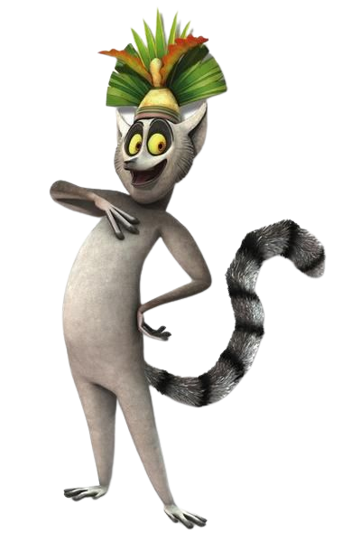

-

Skipper
Skipper jest liderem grupy pingwinów z Madagaskaru i jest bardzo zorganizowany i ambitny. Jest też bardzo odważny i gotowy do podjęcia ryzyka w imię osiągnięcia swoich celów.
Skipper jest bardzo dobrym tancerzem i uwielbia tańczyć disco. Jest bardzo dobrym strategiem i zawsze potrafi znaleźć rozwiązanie nawet w najtrudniejszych sytuacjach. Jest też bardzo szczery i nie boi się mówić prawdy, nawet jeśli ta nie jest zbyt przyjemna dla innych.
-

Kowalski
Kowalski jest inteligentnym i naukowym pingwinem, który jest odpowiedzialny za tworzenie nowych urządzeń i rozwiązywanie problemów. Jest też bardzo nieśmiały i niezbyt pewny siebie.
Kowalski jest wielkim miłośnikiem literatury i uwielbia czytać klasyczne książki. Uwielbia eksperymentować i tworzyć nowe rzeczy. Jest też bardzo empatyczny i troskliwy wobec swoich przyjaciół, zawsze gotowy do pomocy im w trudnych sytuacjach.
-

Riko
Rico jest bardzo silnym i niezwykle lojalnym pingwinem, który jest zawsze gotowy do pomocy swoim przyjaciołom. Nie jest zbyt inteligentny, ale jego siła fizyczna często przydaje się w trudnych sytuacjach.
Rico jest znany ze swojej niezwykłej zdolności do przyjmowania wszelkiego rodzaju przedmiotów do swojego żołądka i potem wydalania ich w niezmienionej formie. Zawsze jest gotowy do pomocy swoim przyjaciołom i jest bardzo empatyczny wobec ich uczuć. Ma też słabość do słodyczy.
-

Szeregowy
Szeregowy jest najmłodszym i najmniej doświadczonym pingwinem w grupie. Jest bardzo nieśmiały i często boi się nowych sytuacji, ale jest też bardzo lojalny wobec swoich przyjaciół.
Szeregowy jest wielkim fanem piosenek i uwielbia śpiewać. Ma bardzo czysty i melodious głos. Jest bardzo nieśmiały i często boi się nowych sytuacji, ale jest też bardzo odważny i zawsze gotowy do pomocy swoim przyjaciołom. Ma też niezwykłą zdolność do języków i potrafi mówić w kilku różnych językach.
-

Król Julian
King Julian jest zarozumiałym lemurem, który lubi być w centrum uwagi i otaczać się luksusowymi przedmiotami. Przybył z Madagaskaru. Jest on bardzo narcystyczny i zapatrzony w siebie. Posiada gekona o imieniu Stefan
Uwielbia też tańczyć i jest znany z swoich szalonych i zabawnych tańców. Ma też słabość do luksusowych przedmiotów i lubi otaczać się pięknymi rzeczami. Mimo że czasami bywa egoistyczny i myśli tylko o sobie, ma dobre serce i zawsze stara się chronić swoich podopiecznych.
-

Moris
Jest mądry i inteligentny (jest drugim najinteligentniejszym zwierzęciem w zoo, pierwszym jest Kowalski), i dzięki temu potrafi przeciwstawić się swojemu władcy, lub powiedzieć mu co o nim myśli.
Zna język kameleonów. Zawsze jest znudzony i ponury. Gotuje i robi koktajle dla Króla Juliana. Na początku uważał, że pingwiny są nienormalne, lecz gdy używały jego kciuka do otwierania tajnych baz, polubił ich.
-

Mort
Mort jest słodki, nieporadny i naiwny. Nie jest zbyt inteligentny, dlatego momentami nie odczuwa bólu. Gdy ktoś zaczyna zachowywać się wobec niego lekceważąco, najczęściej tego nie zauważa.
Uważa, że potrafi zrobić wszystko, co umieją inni. Kiedy wbije sobie do głowy jakiś pomysł, nigdy nie słucha zdania pozostałych na ten temat, można powiedzieć, że zawsze dąży do celu po trupach. Boi się lwów. Niezmordowany wielbiciel króla Juliana
Pingwiny Adélie
Skipper, Kowalski, Riko i Szeregowy należą do rasy pingwinów białookich. Rasa pingwinów białookich (Eudyptes chrysocome) to gatunek pingwina występujący w południowych rejonach Oceanu Atlantyckiego i Południowego. Są to średniej wielkości ptaki, osiągające długość od 70 do 80 cm i wagę od 2,5 do 3 kg. Ich charakterystyczną cechą są białe kufy na głowie i szyi, dzięki czemu są łatwo rozpoznawalne.


-
Zachowania

Te ptaki są bardzo aktywne i lubią pływać w wodzie, ale również spędzają dużo czasu na lądzie, gdzie składają jaja i wychowują potomstwo. Białookie pingwiny są również znane z tego, że potrafią tańczyć i przybierać różne pozy i miny, co sprawia, że są bardzo urocze i zabawne.
-
Stada
Pingwiny białookie są ptakami, które żyją w stadach liczących od kilkuset do kilku tysięcy osobników. Wspólnie polują na ryby i dzielą się zdobytym pożywieniem z innymi członkami stada.
-
Zagrożenia

Mimo że białookie pingwiny nie są uważane za gatunki zagrożone, ich liczebność może być narażona na zmiany w środowisku, takie jak zmiany klimatu czy degradacja siedlisk. Dlatego ważne jest, aby zapewniać im odpowiednie warunki do życia i chronić ich siedliska przed działalnością człowieka.
-

Pożywienie
Pingwiny białookie (Eudyptes chrysocome) są drapieżnikami i ich dieta składa się głównie z ryb, kryl i kalmarów, które polują w wodzie. Są doskonałymi pływakami i potrafią nurkować na głębokość nawet 150 metrów, aby zdobyć pożywienie.